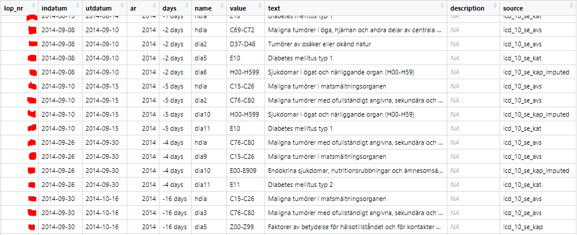

5 ICD codes.
Data files from Socialstyrelsen includes inpatient and outpatient data ranging from 1987 to 2020. A particular area of interest in these data files is that of the reported International Classification of Diseases (ICD) codes reported by the physicians from inpatient/outpatient visits. Closely examining the ICD codes, it is possible to not only classify individuals into groups according to specific risks (eg. high influenza risk), but also to observe outcomes(contracts influenza).
This section documents the process of code extraction, classification, data cleaning, and details in working with the ICD codes reported by Socialstyrelsen.
5.1 ICD Code types
There are a multitude of disease codes (ICD-10CM has around 70,000) which may differ slightly depending on which country uses them (18 different countries had national adoptions). The classification system has changed over the years, from ICD 8, ICD 9, to the contemporary ICD 10. ICD 11 is on the horizon.
The follow are points that are helpful to keep in mind when working with ICD codes:
Single ICD codes may be reported in different formats and need to be standardized (eg. A12.2 may be reported as A122 or A12200)
Similarly, upper and lower case is often mixed across the data tables(eg. a112.b and A112.B)
ICD code chapters (Kapitel) or sections (Avsnitt) are often reported in place of an individual ICD code. These are reported as a code range, such as “H00-H59”, but may take on various iterations which make matching and identification challenging (eg. “H00-H590”, H000-H590”,“H00-H599”, “H00-H99”. etc)
ICD codes in the earlier years may need to be converted to ICD 10 for proper classification dependent on the time frame of analysis.
5.2 Decoding the codes - matching
The approach taken to match ICD codes for further classification begins with identifying matches to the ICD code and code-ranges present in the Socialstyrelsen data with the corresponding definitions provided by Socialstyrelsen. Here, the task is to construct a linking table containing every ICD code, ICD Kapitel, and ICD Avsnitt along with the corresponding definitions and to which risk group they belong to, if any.
This step is essential as much of the Socialstyrelsen data is reported in code ranges(eg. H00-H59), while the ICD codes found in the risk categories are reported as single codes (eg. H12). In constructing a linking table, translation of any ICD codes found in a particular data set into useful groups and categories becomes a simple task which aid not only this study, but any future study utilizing ICD codes.
In the creation of the linking table, finding appropriate tables which list all Kapitel and Avsnitt ranges, across the variations of ICD-8, ICD-9, and ICD-10, proved challenging. The final matching table utilized multiple tables downloaded from Socialstyrelsen in Excel format, as well as tables only available in pdf format which required the manual extraction of code ranges to update the matching table.
5.3 Data cleaning process
This section outlines the primary data cleaning and transformation steps taken to arrive at the final ICD data set. Examples are taken from the data set on inpatient visits to illustrate the process.
First, we can examine the data after some initial merging and standardization of variable names.

“lop_nr” is the unique patient identifier, “indatum” and “utdatum” are dates of check-in and check-out, “ar” is year of visit, while “hdia” corresponds to “hud diagnosis” or primary diagnosis, and variables “dia1” through “dia20” represent additional diagnosis codes.
Here we see patient “X” has had four inpatient hospital visits in 2014. We can examine the second row and see the following:
- The main diagnosis (hdia) is given as “C15-C26” in this hospital visit, which is the same as Diagnosis 1 (dia1). This pattern is most commonly seen in the data, where Diagnosis 1 is identical to the Primary diagnosis.
- Additional diagnoses from the same visit can be seen across the columns dia1 through dia11. Here we notice duplicates, presumably because there are multiple and unique diagnoses that fall within the reported range of value “C76-C80”.
To further investigate the multiple ICD codes from these single visits, it is helpful to transform the data from wide format to long format, where each row represent a single ICD code. This step facilitates the joining of descriptions and to classifications from the linking table and will prepare for subsequent analysis.
The following table shows the data after transforming from wide to long, calculating the number of days per visit, and matching a ICD definition to the code (or code range) that is present in the data to the linking table. Duplicate ICD codes from the same visit are removed as they contain no further information. A column documenting which specific source file the definition originates from is also included to trace specific definitions back to the corresponding Socialstyrelsen document or table.

Tables to match primarily originate from Socialstyrelsen and can be found here:
https://www.socialstyrelsen.se/statistik-och-data/klassifikationer-och-koder/icd-10/